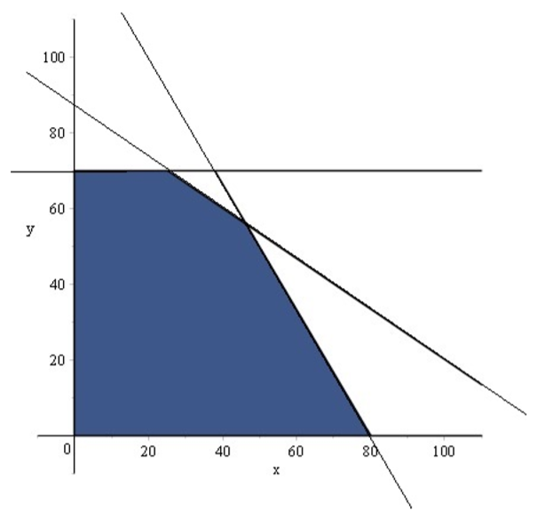
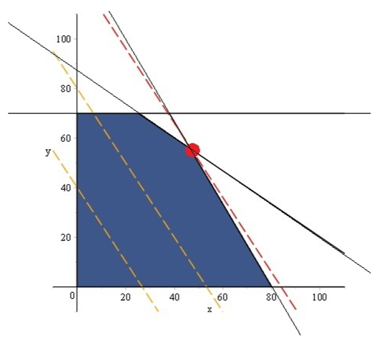

A következőkben 2-dimenziós lineáris programozási feladatokat oldunk meg grafikusan.
A módszer azon alapul, hogy az egyenlőtlenség típusú feltételek félsíkokat határoznak meg a 2 dimenziós térben, és ezen félsíkok metszeteként előállítható a lehetséges megoldások L halmaza, melynek ismeretében meghatározható az optimális megoldás.
Egy két változót tartalmazó egyenlőtlenséget kielégítő pontok halmaza pontosan egy félsík. A problémák általában egynél több egyenlőtlenséget tartalmaznak. Ebből adódik, hogy egy pont akkor és csak akkor elégíti ki az összes tekintett egyenlőtlenséget, ha mindegyik, az egyenlőtlenségek által meghatározott félsíkban benne van.
Ez viszont akkor és csak akkor lehetséges, ha a pont eleme az egyenlőtlenségek által meghatározott félsíkok metszetének.
Tehát a lehetséges megoldások L halmaza pontosan az egyenlőtlenségek által meghatározott félsíkok metszetével egyenlő.
A probléma megoldásához meg kell még határoznunk L egy olyan pontját, amelyben a célfüggvény maximum feladat esetén maximális, minimum feladat esetén pedig minimális értéket vesz fel.
A 2-dimenziós, szemléletes megközelítés lehetővé teszi, hogy összefoglaljuk a lineáris programozási feladat optimális megoldásának létezésével kapcsolatos lehetőségeket.
1. Ha L korlátos, akkor L egy konvex sokszög és a feladatnak létezik optimális megoldása. A kompaktság a Heine Borel tétel és a Weierstrass tételből következik, hogy létezik optimális megoldás.
2. Ha L nem korlátos, akkor L zárt és véges sok csúcsponttal rendelkező konvex halmaz, továbbá létezik optimális megoldása a feladatnak, vagy a célfüggvény minimum feladatnál bármely kicsi (maximum feladatnál bármilyen nagy)értéket felvehet a lehetséges megoldások halmazán. Ilyenkor azt mondjuk, hogy a célfüggvény minimum feladat esetén alulról (maximum feladat esetén felülről) nem korlátos a lehetséges megoldások halmazán, és ebben az esetben nem létezik optimális megoldása a feladatnak.
3. Előfordulhat, hogy L üres halmaz. Ekkor a problémának nincsen lehetséges megoldása,így nem létezik optimális megoldás sem.
A felsoroltak igazak tetszőleges lineáris programozási feladatra is.
1.2 Kidolgozott példa:
2.1. Elméleti levezetés, kidolgozás
Tekintsük az alábbi feladatot:
Egyárban kétféle terméket állítanak elő, asztalokat és szekrényeket. Ezekről ismertek az alábbiak:
Termék
Szekrény
Asztal
Eladási ár (Ft/db)
100000
75000
Előállítási költség (Ft/db)
25000
20000
Alapanyag-szükséglet (bútorlap/db)
5
3
Előállítási idő (óra/db)
10
15
Továbbá ismert még, hogy a gyár munkával töltött időszaka 1300 óra évente. A
beszerezhető alapanyag is korlátozott, ez 400 bútorlap évente. Asztalból pedig évente maximum 70
darabot készítenek.
Feladat: Határozzuk meg az évi maximális nyereséget biztosító termelési tervet!
Megoldás: A szekrényből x-et, az asztalból pedig y darabot termelünk. Tehát megoldandó a következő matematikai programozási feladat:
10x
+ 15y
≤
1300
5x
+ 3y
≤
400
y
≤
70
y≥0,
y≥0
75000x
+ 50000y
->
max
Első lépésként ábrázoljuk grafikonon a függvényeket.

A célfüggvényünk a 75000x + 50000y = c → max ami ekvivalens azzal, hogy15 x + 10y =
c/5000 → max.

-> A piros pont jelöli az optimumot. Mely koordinátáival
megadva (46,56).
Tehát Szekrényből 46 darabot, míg asztalból 56 darabot tud készíteni a gyár, hogy a
maximális nyereséget elérje.
1.3 Példafeladat kódjai:
3.1. IBM CPLEX - Példa kód
3.2. Lingo - Példa kód
3.3. R - Példa kód
3.4. SAS/OR - Példa kód
1.4 Feladatok:
1.feladat
Egy gyárban kétféle terméket állítanak elő: asztalokat és székeket.
Ezekről ismertek az alábbiak:
Termék
Szekrény
Asztal
Eladási ár (Ft/db)
100000
75000
Előállítási költség (Ft/db)
25000
20000
Alapanyag-szükséglet (bútorlap/db)
5
3
Előállítási idő (óra/db)
10
15
Továbbá ismert még, hogy a gyár munkával töltött időszaka 1300 óra
évente. A beszerezhető alapanyag is korlátozott, ez 400 bútorlap évente. Asztalból pedig
évente maximum 70 darabot készítenek.
Határozzuk meg az évi maximális nyereséget
biztosító termelési tervet!
Egy összejövetelre szendvicseket készítünk. Két fajtát szeretnénk
elkészíteni, az első fajtához 2 dkg vajra, 2 dkg sonkára, 2 dkg sajtra, 1 dkg uborkára és
egy szelet kenyérre van szükség, míg a második fajtánál 1 dkg vaj, 1.5 dkg szalámi, 3 dkg
sajt, 1 dkg uborka és szintén egy szelet kenyér szükséges. Kenyérből korlátlan mennyiség
áll rendelkezésünkre, de vajból csak 45 dkg, sonkából 60 dkg, szalámiból 35 dkg, sajtból
75 dkg és uborkából pedig 35 dkg van.
Maximálisan hány szendvicset tudunk
elkészíteni? Az egyes fajtákból külön-külön hány darabot?
Egy kis ruházati vállalat női kosztümöket és konfekció öltönyöket
gyárt. Minden kosztümön 4 $ haszna van, míg minden öltönyön 3 $. Minden öltöny illetve
kosztüm egy óra szabást igényel. Egy kiszabott kosztümöt 2, míg egy kiszabott öltönyt 1
óra alatt lehet megvarrni. Heti termelési terv elkészítéséhez tudjuk, hogy egy héten maximum
40 óra fordítható szabásra és 60 varrásra. Az anyagból rendelkezésre álló mennyiség
feltételezésünk szerint korlátlan.
Adjunk tanácsot a cégnek, hogy a maximális
profithoz mennyi kosztümöt és öltönyt készítsen egy héten!
Jones farmer kétféle süteményt süt (csokoládés és vaníliás), hogy
kiegészítse jövedelmét. Egy csokoládés sütemény 1 $-ért, egy vaníliás 50 centért
adható el. Minden csokoládés süteménybe kell 4 tojás és 20 percig kell sütni. Minden
vaníliás sütibe kell 1 tojás és 40 percig kell sütni. Rendelkezésre áll 8 óra sütési
idő valamint 30 tojás.
Fogalmazzunk meg LP-t a profit
maximalizálására és oldjuk meg grafikusan a feladatot. (Törtszámú sütemény megengedett.)
Egy bútorgyártó cég tömör fából és préselt lapból készít
asztalokat. Egy tömörfa asztalból származó haszon 1 $ egy préselt lapból 2 dollár, az
elvárásuk, hogy legalább 6 $ haszon keletkezzen! Egy préselt lap asztalhoz 1 kg fűrészporra
van szükség, a tömörfa asztal gyártásánál 1 kg fűrészpor, mint melléktermék keletkezik,
a gyárnak tartalékban maximum 3 kg felhasználható fűrészpora van. Mindkét asztal
gyártásához 1-1 tubus ragasztó is kell, amiből 10 tubus áll a rendelkezésre! A marketing
osztály szerint minden legyártott tömörfa asztal 2 ponttal növeli a gyár termékeinek
népszerűségét, színvonalát, míg egy legyártott préselt asztal 3 ponttal csökkenti!
Adjunk tanácsot hány tömörfa és hány
préselt asztalt készítsen a cég, hogy a színvonal maximális legyen!
Egy tej-gazdaságban két fajta állatot tartanak tehenet és kecskét. Jelenleg
10 tehén és 20 kecske van az állományban. Az állatokat elsősorban a tejtermelés miatt
nevelik. Egy tehén átlagosan 10 l, míg egy kecske 3 l tejet ad naponta. A tehéntej ára
literenként 100 Ft, míg a kecsketejé 150 Ft. Egy tehén tartásához 5, míg egy kecskéhez 4
egység terület szükséges, a gazdák összesen 160 egységnyi területen tarthatják az
állatokat. Az élelmezés szempontjából egy tehénre naponta 5 $-t míg egy kecskére 3-at kell
költeni. élelmezésre összesen napi 500 $ jut a gazdaságban.
Adjunk tanácsot a gazdáknak, hogyan
változtassák meg a jelenlegi állományt (el is adhat állatot, vehet is állatot), hogy a
feltételeikhez mérten optimális legyen a tej eladás szempontjából!
bEgy gyárban kétféle terméket gyártanak. Az egyikből havonta legalább 12
raklapnyit állítanak elő, a másikból pedig 8-at. Az első termék elkészítéséhez 15
munkásra van szükség, míg a másodikhoz 30. A gyár össztermelése 40 raklapnál nem lehet
több. Az Az első termékből raklaponkénti tiszta haszon 150000 Ft, a másodikból pedig 220000
Ft. Havonta maximálisan 600 munkás vehet részt a termelésben.
a) Hogyan szervezzük meg a termelést, hogy a
nyereség havonta 5000000 Ft legyen?
b) Mikor lesz maximális a nyereség, és
mekkora ez az összeg?
Egy útszéli hamburgerezőben kétféle hamburgert lehet vásárolni,
csirkéset, ami 800 Ft-ba kerül és marhaburgert, aminek az ára 1100 Ft. A tulajdonos szeretné
tudni, mennyi lehet a maximális napi bevétele, ha a meglévő alapanyagokból dolgoznak és a
forgalom is megfelelő.
A raktárban található 80 buci, 2 kg sajt, 5 kg csirkehús, 4 kg marhahús és
3,5 kg zöldség.
Egy csirkeburger elkészítéséhez szükség van egy bucira, 10 dkg csirkehúsra,
4 dkg sajtra és 10 dkg zöldségre.
Egy marhaburgerhez szükséges szintén egy buci, 13 dkg marhahús, 8 dkg kell
sajtból is és zöldségből is.
a) Lehet e a bevétel 30 000 Ft?
b) Elérheti e a bevétel a 40 000 Ft-os
összeget?
c) Mennyi lehet a maximális bevétek, és ekkor
hány hamburgert adnak el?
Juli néni gofrit és palacsintát árul a strandon. Két alapanyag szükséges
ezek előállításához: tej és liszt. Minden eladott gofri után 50 forint és minden eladott
palacsinta után 40 forint profitja lesz. Egy gofrihoz 10 dkg liszt, 13 cl tej szükséges. Egy
palacsintához 8 dkg liszt, 6.5 cl tej szükséges. Viszont Juli néninek végesek a készletei,
így lisztből csak 8 kg, tejből 84.5 dl áll rendelkezésre.
Mennyi palacsintát és mennyi gofrit
csináljon, hogy maximális legyen a profitja?
Rozi néni gyermek holmikat köt szabadidejében. Kétféle terméket készít:
sapkátés kardigánt. Nyugdíjából hetente 250 dkg fonalat tud venni és felhasználni. Ha egy
héten csak sapkát köt akkor 40 darabot tud elkészíteni, ha csak kardigánt akkor 20 darabot.
Egy sapkához 5 dkg fonalra van szükség, egy kardigánhoz pedig 20 dkg-ra. Egy nyugdíjasokat
segítő szervezet vásárolna Rozi nénitől kötött baba holmikat, de csak abban az esetben ha
hetente legalább 45 sapkát és 10 kardigánt el tud készíteni. Ebben az esetben adna a cég
2000 Ft-ot minden sapka és 4000 Ft-ot minden kardigán után.
Adjunk tanácsot Rozi néninek, hogy a meglévő
készletéből heti bontásban hány kardigánt és sapkát készítsen, hogy a bevétele
maximális legyen!
A gyerekemet nyári táborokba szeretném küldeni. Két lehetőség közül
választhatok: Lovastábor és úszótábor. A napi költségek a lovastáborban 10000 Ft, az
úszótáborban pedig 12000 Ft. A lovastábor legalább 5 napra foglalható, míg az úszótábor
legalább 7 nap. összesen 120000 Ft-om van a táborokra, de szeretném ha minél több napot
töltene a gyermekem a nyáron táborban. Az utazást illetően a gyerek nyári kedvezményes
utazásra jogosult összesen 100 km-re. A lovastábor esetén megtenne naponta 20 km-t, míg az
úszótábor esetén 5 km-t. Mindkét táborban szeretném ha részt venne!
a) Melyik táborba hány napra írassam be a
gyereket, annak érdekében hogy minél több napot táborozzon és az utazási valamint pénzügyi
kereteimbe is beleférjek?
b) Hogyan változik a megoldás, ha a két
tábor közül megelégszem ha csak az egyikbe megy?